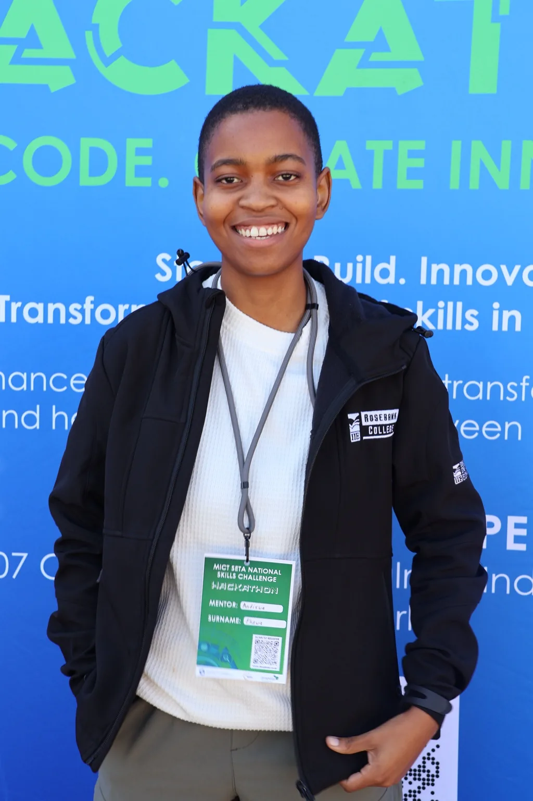
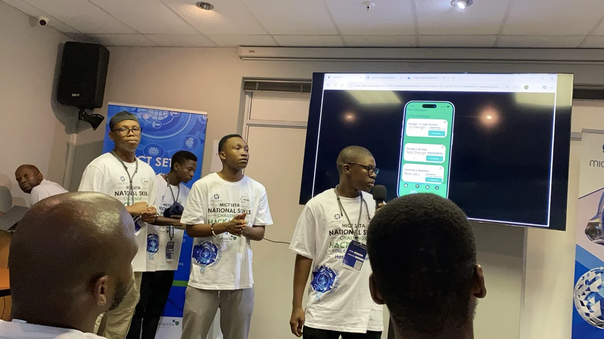
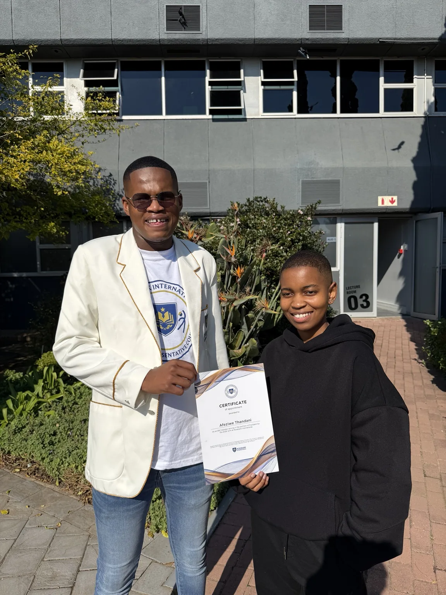
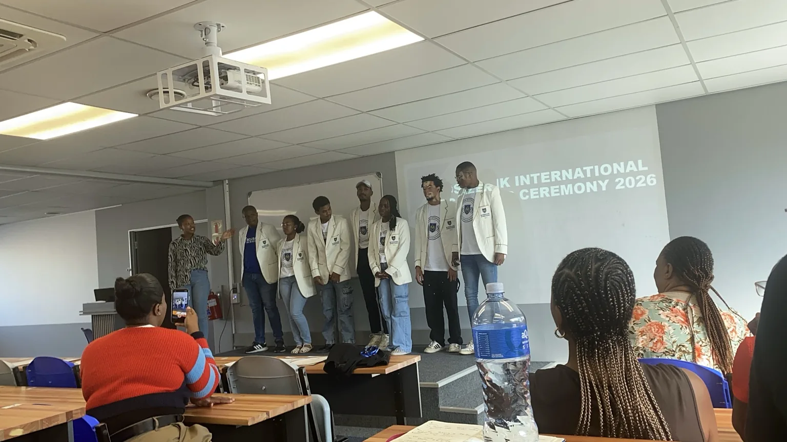
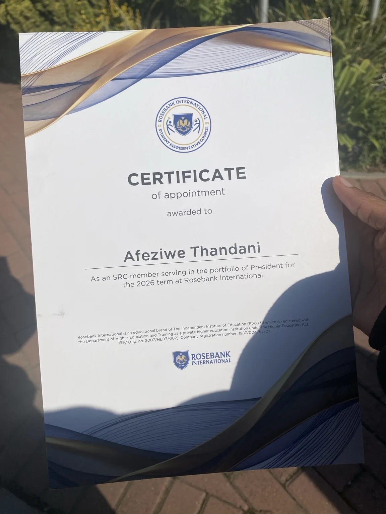
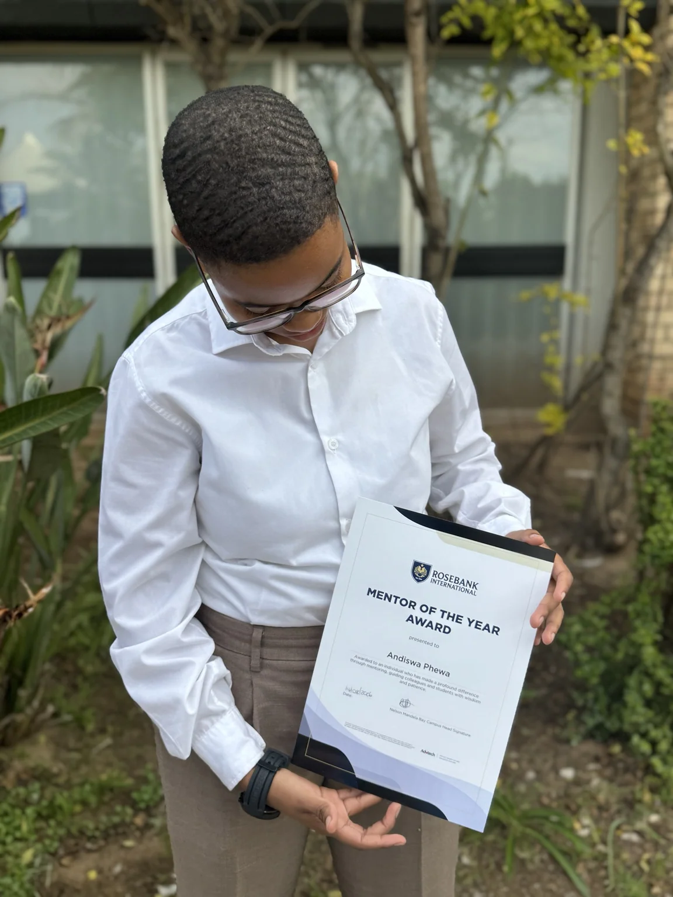

Continued study
Postgraduate Computing and Data Analytics study informs my research interests and teaching practice.
View research →Mentoring students and emerging leaders forms an important part of my work beyond formal lectures.
My hackathon involvement gives me a practical way to support collaboration, design thinking, problem-solving and presentation skills outside scheduled classes.

Hackathon mentoring
As a hackathon mentor, I supported participants as they developed technology concepts and prepared to communicate how their solutions work. This involved listening to ideas, asking technical questions and encouraging teams to refine their approach.
These experiences also inform my teaching, where I encourage students to justify decisions and demonstrate their work, not simply describe it.

Student-led solutions
At the MICT SETA National Skills Challenge Hackathon, student teams presented their applications and explained the problems their ideas addressed. I provided mentoring through practical questions and feedback on solution design, technical decisions and communicating a coherent demonstration.
This gave participants an opportunity to practise teamwork, critical thinking and presenting their work to an audience.
My student mentorship includes encouraging confidence, communication, responsibility and growth through academic and leadership opportunities.
Student mentorship · 2026
I provide one-to-one mentorship to students taking on leadership responsibilities, offering encouragement, practical guidance and constructive feedback as they develop their confidence and communication skills.
These photographs capture moments of student achievement and the value of continued support beyond formal lectures.



I received the Mentor of the Year Award from Rosebank International in recognition of my commitment to helping students grow in confidence, take on responsibilities and navigate academic and leadership opportunities.

An acknowledgement of continued support
My mentoring work includes supporting student mentees, guiding student teams during technology challenges and offering practical academic and professional advice. The recognition reflects the time spent listening, encouraging, offering feedback and helping students take the next step.
It also reinforces my belief that the role of an educator extends beyond delivering subject content.
Recognition moment
A short recording of the award ceremony, included alongside the photograph of the certificate as evidence of this recognition.
Award ceremony excerpt · approximately 36 seconds.
Maintaining an active professional practice allows me to connect current development tools, further study and student support to the way I teach computing.
Postgraduate Computing and Data Analytics study informs my research interests and teaching practice.
View research →Development, cybersecurity and version-control courses strengthen the practical knowledge I bring to class.
View professional development →Hackathon mentoring, student leadership guidance and community engagement create opportunities to learn from others while sharing technical knowledge.
I have also shared practical IT and banking-security advice with the Gqeberha community. Community communication and media engagement give me opportunities to translate technical knowledge into advice for a wider audience.
Algoa FM · Community communication
In this short Algoa FM interview excerpt, I shared technology-related banking advice with the community. This contribution shows how I take digital knowledge beyond a classroom setting and communicate practical information in an accessible way.
The clip captures part of the interview setting during the event; it is a short excerpt rather than the full broadcast.
Algoa FM interview excerpt · approximately 11 seconds.